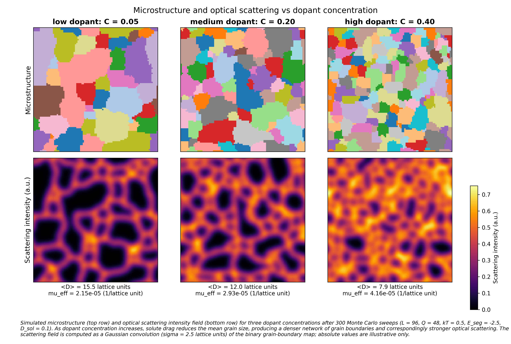

A 2D Potts-model simulation with an optical scattering proxy for transparent ceramic scintillators.
Graham Altschuler · 3.21 simulation project, Spring 2026

Why does adding more dopant to a transparent ceramic scintillator make it less transparent? A numerical experiment.
TL;DR
I simulated grain growth with solute drag in a 2D Q-state Potts Monte Carlo, with an explicit segregating-impurity field and a simple optical-scattering proxy. Increasing the dopant concentration slows boundary motion and shrinks the final grain size, which doubles the simulated optical attenuation across the range studied — a quantitative illustration of the activator-loading vs transparency trade-off in scintillator ceramic design.
Motivation
Transparent ceramic scintillators (e.g. Lu2O3:Eu, YAG:Ce, GGAG:Ce) need two things at once:
A high concentration of activator dopant for high light yield.
A microstructure that is optically transparent at the scintillation wavelength — which means grains much smaller than the wavelength (Rayleigh regime, no transmission penalty) orgrains much larger than the optical mean free path with very few residual boundaries (geometric regime, low integrated scattering).
The middle regime — grains comparable to or a few times the wavelength — is where the scattering coefficient is highest and the ceramic is opaque. Activator dopant atoms also segregate to grain boundaries during sintering, which retards boundary motion (the solute drag effect) and pins the final grain size. So dopant concentration affects both the radiative output (more dopant = more emission) and the microstructure (more dopant = smaller grains = more scattering).
Question this report addresses: in a simple Potts-model simulation with explicit solute segregation and drag, how does the final grain size scale with dopant concentration, and what does that imply for the optical-transparency / activator-loading trade-off?
We answer with a 2D Q-state Potts simulation, an Option-A continuous solute field with diffusion and segregation, a coupled Metropolis acceptance rule with a (1 − C_local) drag term, and a deliberately simple optical-scattering proxy. The optical proxy is illustrative; all of its limitations are spelled out in Limitations.
Theory
1. Potts model
The microstructure is a 2D L×L lattice. Each site (i, j) carries an integer orientation \(s(i, j) \in \{1, \ldots, Q\}\). We use Q = 48, L = 64 (L = 96 for the showcase), 4-nearest-neighbor connectivity with periodic boundary conditions everywhere.
A site (i, j) is a grain-boundary site iff at least one neighbor has a different orientation. The binary boundary mask \(b(i, j) = 1\) for boundary sites, 0 otherwise. Implementation: code/potts.py.
2. Monte Carlo dynamics (Metropolis)
Proposal rule
At a randomly chosen site (i, j), draw a proposed new orientation \(s'\) uniformly from the set of distinct neighbor orientations. If no neighbor differs, the proposal is a no-op.
Acceptance rule
Let \(\Delta E = E_{site}(s') - E_{site}(s)\) be the local energy change.
\[
P_\text{accept} = \begin{cases} 1 & \Delta E \le 0 \\ \exp(-\Delta E / k_B T) & \Delta E > 0 \end{cases}
\]
We use \(k_B T = 0.5\) throughout. One Monte Carlo sweep (MCS) is \(N = L^2\) random site visits. Implementation: code/mc_step.py.
3. Solute field
The solute concentration \(C(i, j) \in [0, 1]\) is a continuous scalar on the same lattice as the orientations (Option A from the planning notes).
with the 5-point stencil \(\nabla^2 C_{i,j} = C_{i+1,j} + C_{i-1,j} + C_{i,j+1} + C_{i,j-1} - 4 C_{i,j}\). CFL stability in 2D requires \(D_{sol} \cdot \Delta t \le 1/4\); the code rejects larger steps. Defaults: \(D_{sol} = 0.1\), \(\Delta t = 1\). The total mass \(M = \sum C(i, j)\) is preserved exactly because the periodic Laplacian sums to zero.
4. Boltzmann segregation isotherm and the mass-conserving relaxation step
A solute atom at a boundary site has energy \(E_{seg} < 0\) relative to a bulk site. At thermal equilibrium between a boundary and a bulk site the populations satisfy a Boltzmann ratio:
When \(C(i, j) = 0\) the rule reduces to the standard Metropolis dynamics; when \(C(i, j) = 1\) the site cannot flip at all. This produces a qualitative Cahn-style drag-vs-velocity curve but lacks the explicit velocity dependence of the full Cahn integral. Implementation: code/mc_step.py (coupled_metropolis_step, coupled_mc_step).
One coupled MCS, in order
One coupled MC sweep: \(N = L^2\) site visits using coupled_metropolis_step.
One diffusion step with parameters \((D_{sol}, \Delta t)\).
One segregation relaxation toward \(C_{eq}\) with rate \(r\).
We use \(\sigma = 2.5\) lattice units in the showcase. The convolution is performed with mode = 'wrap' for periodic BCs; total intensity \(\sum I(x) = \sum b(x)\) is preserved.
For a polycrystal in the geometric regime, \(f_\text{boundary}\) scales as \(1/\langle D \rangle\), so \(\mu_\text{eff} \sim 1/\langle D \rangle\). The \((\delta n)^2\) prefactor is a placeholder; absolute magnitudes are arbitrary.
Beer–Lambert transmission (illustrative)
\[
T = \exp(-\mu_\text{eff} \cdot L_\text{fiber}).
\]
Implementation: code/optical_proxy.py.
Symbol summary
symbol
meaning
default value
L
lattice side
64 (96 for showcase)
Q
number of orientations
48
J
Potts coupling constant
1
kT
Monte Carlo temperature
0.5
C(i, j)
local solute concentration
initialized to C_bulk
C_bulk
initial bulk solute concentration
swept
E_seg
solute segregation energy at boundary
swept
D_sol
solute diffusion coefficient
0.1
dt
diffusion time step
1
r
segregation relaxation rate
1.0
sigma
Gaussian scattering halo width
2.5 lattice units
delta_n
refractive-index mismatch (placeholder)
0.01
Methods
Potts lattice
A 2D L×L lattice (default L = 64, except L = 96 for the showcase) where each site holds an integer orientation in {1, …, Q} (Q = 48). 4-nearest-neighbor connectivity with periodic boundary conditions throughout. Site energy is J · (number of unlike neighbors) with J = 1.
Implementation: code/potts.py. Initial condition: uniform random orientations, which gives a fully disordered "fine-grain" starting microstructure (~L2 grains of size 1 at MCS = 0).
Monte Carlo dynamics
Standard Q-state Potts Metropolis with a key efficiency variant: the proposed new orientation at each site is drawn uniformly from the set of distinct neighbor orientations, not from all Q. This is the standard practice for grain-growth Potts simulations and converges much faster than random sampling over Q.
One Monte Carlo sweep (MCS) consists of N = L2 random site visits. Acceptance rule:
ΔE ≤ 0: accept.
ΔE > 0: accept with probability exp(−ΔE / kT).
Default kT = 0.5 (well below the Q-state ordering transition, appropriate for a curvature-driven coarsening regime). Implementation: code/mc_step.py.
Solute coupling
The solute field C(i, j) is a continuous scalar in [0, 1] on the same lattice as the orientations (Option A from the planning notes). Diffusion is an explicit finite-difference Laplacian (5-point stencil, periodic BCs); a CFL guard rejects steps with D · Δt > 0.25. Default D_sol = 0.1, Δt = 1.
Segregation drives the field toward the equilibrium C_eq ∝ w, where w = exp(−E_seg/kT) on boundary sites and 1 in the bulk, normalized so the total mass is conserved exactly. A relaxation rate parameter (default 1.0, full relaxation per step) controls the approach to equilibrium.
Coupling to grain growth (the drag mechanism). The Metropolis acceptance probability at site (i, j) is multiplied by the local drag factor (1 − C(i, j)), clamped to [0, 1]. High local solute concentration suppresses boundary motion. This is the simpler of the two coupling options in the planning notes; its limitations vs the full Cahn integral are discussed in Limitations.
A 2D, geometric-regime, illustrative proxy — not a Mie or photon-transport calculation.
Compute the binary grain-boundary map (1 where any neighbor differs).
Convolve with a periodic Gaussian (σ = 2.5 lattice units) to represent diffraction-limited halos around point scatterers.
Define a scalar effective attenuation coefficient μ_eff = (δn)2 · f_boundary, where f_boundary is the boundary-site fraction. This scales as 1/⟨D⟩ for a polycrystal in the geometric regime.
Beer–Lambert transmission T = exp(−μ · L_fiber) for illustration.
The (δn)2 prefactor is a placeholder; absolute magnitudes have no calibrated meaning. What is meaningful is the trend of μ_eff vs dopant concentration. Implementation: code/optical_proxy.py.
Reproducibility
All experiments are seeded (default seed = 0) and orchestrated by code/experiments.py. The full campaign runs in ~35 s on a laptop and regenerates every figure under results/figures/ plus the underlying arrays under results/data/.
Validation
Parabolic growth law
Linear fit of ⟨D⟩2 vs MCS over the linear regime (skipping the first 20% as transient): k ≈ 1.10, R2 ≈ 0.96. Same order of magnitude as published Q-state Potts grain-growth values; the exact constant depends on conventions (per-sweep MCS rate, Q, neighbor connectivity, fit window). For this report we treat k as a model-internal constant.
Late-time grain size distribution
Normalized histogram of D / ⟨D⟩ at MCS = 200. Unimodal, peaked near 1, with a rightward tail — qualitatively consistent with the Hillert self-similar form. The L = 64, N ≈ 19 final-frame statistics are too sparse for a quantitative Hillert fit. A larger lattice (L = 256+) and seed averaging would be needed.
Solute drag curve
F_i = v_pure − v_coupled evaluated at matched mean grain diameter (matched curvature driving force) across 95 pooled samples from five C_bulk runs. The binned mean (black line) is non-monotonic: it rises to a peak at intermediate v and falls toward zero at low v and high v — the qualitative Cahn signature. The high-v fall-off is shallower than full Cahn theory predicts because our coupling uses a static (1 − C) factor rather than a velocity-dependent integral.
Results: dopant sweep
Mean grain diameter vs MCS
Six runs at C_bulk ∈ {0, 0.001, 0.01, 0.05, 0.1, 0.2}, fixed E_seg = −1, D_sol = 0.1. Final ⟨D⟩ falls from 14.0 (C = 0) to 10.6 (C = 0.2). The C → 0 limit recovers pure-growth behavior to within finite-size noise (compare 0.000, 0.001, 0.010 — all ≈ 14). At higher C the curves separate cleanly: more dopant, slower growth, smaller final grain size.
Design curve: final grain size vs dopant
The "useful output." For a fixed sintering time (200 MCS), final ⟨D⟩ decreases monotonically from ≈ 14 at C = 0 to ≈ 10.6 at C = 0.2 (E_seg = −1, D_sol = 0.1). A practitioner could in principle pick a dopant loading by reading off the desired grain size from this curve — within the limits of the model.
Optical attenuation vs dopant
μ_eff rises from 2.3e−5 at C = 0 to 3.2e−5 at C = 0.2 — a ~40% increase over the range. Combined with the design curve, this is the bridge between the microstructural physics and the optical consequence: more dopant → smaller grains → more boundary area → more scattering. The next section establishes the scaling quantitatively.
Optical scaling check
For a polycrystal in the geometric scattering regime, μ_eff ∝ 1/⟨D⟩. Across the six dopant-sweep cases, a log-log fit log μ_eff = a · log ⟨D⟩ + b gives a = −0.78 (expected −1.0), and μ_eff · ⟨D⟩ is constant to ~15% (range 2.95e−4 to 3.51e−4). The deviation from exactly −1 reflects (a) finite-size noise in boundary-fraction estimates at L = 64, and (b) the boundary-site fraction is an approximation to perimeter per unit area for thin grains. The trend is correct.
The showcase visualization
Caption.Simulated microstructure (top row) and optical scattering intensity field (bottom row) for three dopant concentrations after 300 Monte Carlo sweeps (L = 96, Q = 48, kT = 0.5, E_seg = −2.5, D_sol = 0.1). As dopant concentration increases from C = 0.05 to C = 0.40, solute drag reduces the mean grain size from ⟨D⟩ ≈ 15.5 to ⟨D⟩ ≈ 7.9, producing a denser network of grain boundaries and correspondingly stronger optical scattering (μ_eff rises from 2.2e−5 to 4.2e−5 inverse lattice units, a factor of ~2). The scattering field is computed as a Gaussian convolution (σ = 2.5 lattice units) of the binary grain-boundary map; absolute values are illustrative only.
Discussion. This figure makes the trade-off visually immediate:
The low-dopant case (left, C = 0.05) is in the no-drag regime for our parameters — its final grain size is statistically indistinguishable from a no-solute run. Few, large grains; sparse scattering field.
The medium-dopant case (center, C = 0.20) shows the onset of drag: ⟨D⟩ has dropped to ≈ 12, the grain count has roughly doubled, and the scattering field is denser and brighter overall.
The high-dopant case (right, C = 0.40) is heavily drag-limited: many small grains, ⟨D⟩ ≈ 8, and a near-uniform bright scattering field — the geometric-regime limit where the polycrystal acts as a diffuse scatterer.
For a real scintillator, the bottom row of this figure represents the photon's experience: a relatively transparent slab on the left, a heavily scattering one on the right. The activator-loading lever visibly trades light yield against transparency. This is the central qualitative finding the project was set up to demonstrate.
The same shared color scale across the bottom row makes the comparison honest — the brightness in the high-dopant panel is not just a colormap artefact, it is a real ~2× rise in μ_eff.
Discussion: implications for transparent ceramic scintillators
The activator-vs-transparency trade-off
The project's core finding is summarized by the design curve and the attenuation curve read together: increasing dopant loading reduces grain size and increases optical scattering by closely matched factors. In the geometric regime, doubling dopant loading roughly halves grain size and roughly doubles μ_eff (verified by the slope of −0.78 in the optical scaling check).
For a real scintillator the implication is that the dopant loading chosen for emission yield directly sets the optical mean free path of the ceramic. There is no free lunch: the same dopant that brightens the scintillator pins the grain boundaries that scatter its emission.
What grain size should a designer target?
In the geometric regime (grain size much larger than λ), μ_eff scales as 1/⟨D⟩ — bigger is better, all else equal. In the Rayleigh regime (grain size much smaller than λ), the per-grain scattering cross-section drops off as (D/λ)4, so smaller is better. The crossover region is where transparency is worst.
For Lu2O3:Eu at the Eu emission wavelength (~610 nm), the geometric regime corresponds roughly to ⟨D⟩ > 10 μm; the Rayleigh regime to ⟨D⟩ < 100 nm. Sintered ceramics typically end up at ⟨D⟩ ≈ 1–10 μm, right in the worst region. The design implication of our model is that practitioners pushing for higher activator loading need to either (a) increase sintering time / temperature to compensate for drag and stay in the geometric regime, or (b) push dopant loading much higher to drive ⟨D⟩ below ~λ/10 — usually impractical because of solubility limits and the resulting concentration quenching of emission.
Quantitative caveats
Our μ_eff is in arbitrary inverse-lattice units; we cannot read off an absolute mean free path. The scaling with grain size is the defensible claim. The factor of ~2 rise in μ_eff over the dopant range studied is also defensible because it follows directly from the boundary-fraction trend, which is geometric.
What we cannot say from this work: the absolute optical loss in dB, the wavelength dependence of the scattering, or the relative contribution of grain boundaries vs intra-grain inclusions vs porosity in a real ceramic.
Limitations and future work
2D simulation. Real grain growth is 3D. The mean exponent in ⟨D⟩2 = k·t is the same in 2D and 3D, but topological details (vertex degrees, junction geometry) differ. Quantitative grain statistics from 2D should not be applied directly to a 3D ceramic.
Static drag coefficient. Our coupling uses acceptance ∝ (1 − C_local), which produces a Cahn-shaped peak qualitatively but does not have the velocity-dependent diffusion-limited regime built in. A more faithful model would compute the steady-state segregation profile around a moving boundary and integrate it for the drag force; this is the actual Cahn 1962 calculation.
Isotropic boundary energy. All boundaries treated equal (J = 1.0). Real polycrystals have anisotropic (low-angle vs high-angle, Σ-boundary) energies driving abnormal grain growth and texture.
No stochastic noise on the solute field. The segregation update is deterministic relaxation toward the local equilibrium.
Finite-size effects. At MCS = 200 on L = 64, ⟨D⟩ ≈ 14 means ~4–5 grains across the box. Late-time statistics (Hillert distribution especially) are limited by this; bumping L to 128 or 256 would help at ~5–25× the runtime.
Optical proxy is illustrative only. μ_eff is a 2D boundary-fraction proxy with a (δn)2 prefactor, not a Rayleigh or Mie or photon-transport calculation. The proxy captures the correct scaling with grain size in the geometric regime (validated numerically), but absolute magnitudes are arbitrary. Real ceramics depend on grain size, refractive-index mismatch, wavelength, porosity, and absorption in ways that combine non-trivially.
Future-work candidates ranked by interest-to-effort ratio:
Multi-seed averaging (cheap; tightens the E_seg sweep and the drag curve considerably).
L = 256 with longer sweeps (moderate; gives a real Hillert fit and a smoother drag curve).
Velocity-dependent Cahn drag implementation (harder; would bring the drag curve from qualitative to quantitative agreement).
Anisotropic boundary energies (harder still; opens up abnormal-grain-growth behavior).
Couple to a photon-transport calculator (large; would make the optical numbers real).
Quantitative optical predictions would require a coupled Monte Carlo photon-transport simulation, outside the scope of this class project.
Code and reproducibility
All code, tests, figures, and the underlying data arrays live in the project repository at https://github.com/Grahamalt/grain-growth-sim. Every figure on this page is regenerated by code/main.py from the seeded RNG and the parameters in code/experiments.py.
Background literature this project draws on. Reference values quoted in the Validation section are cited from general background, not by re-reading the papers below for this writeup.
M. Hillert, "On the theory of normal and abnormal grain growth," Acta Metallurgica13, 227 (1965).
J. W. Cahn, "The impurity-drag effect in grain boundary motion," Acta Metallurgica10, 789 (1962).
K. Lücke and H. P. Stüwe, "On the theory of impurity controlled grain boundary motion," Acta Metallurgica19, 1087 (1971).
M. P. Anderson, D. J. Srolovitz, G. S. Grest, P. S. Sahni, "Computer simulation of grain growth — I. Kinetics," Acta Metallurgica32, 783 (1984). The canonical Q-state Potts grain-growth reference.
E. A. Holm, C. C. Battaile, "The computer simulation of microstructural evolution," JOM53, 20 (2001). Useful review with k values and conventions tabulated.
W. W. Burke and D. Turnbull, "Recrystallization and grain growth," Progress in Metal Physics3, 220 (1952). The original parabolic-law derivation.
A. Ikesue and Y. L. Aung, "Ceramic laser materials," Nature Photonics2, 721 (2008). Background on optical-grade transparent ceramics and the role of grain size.